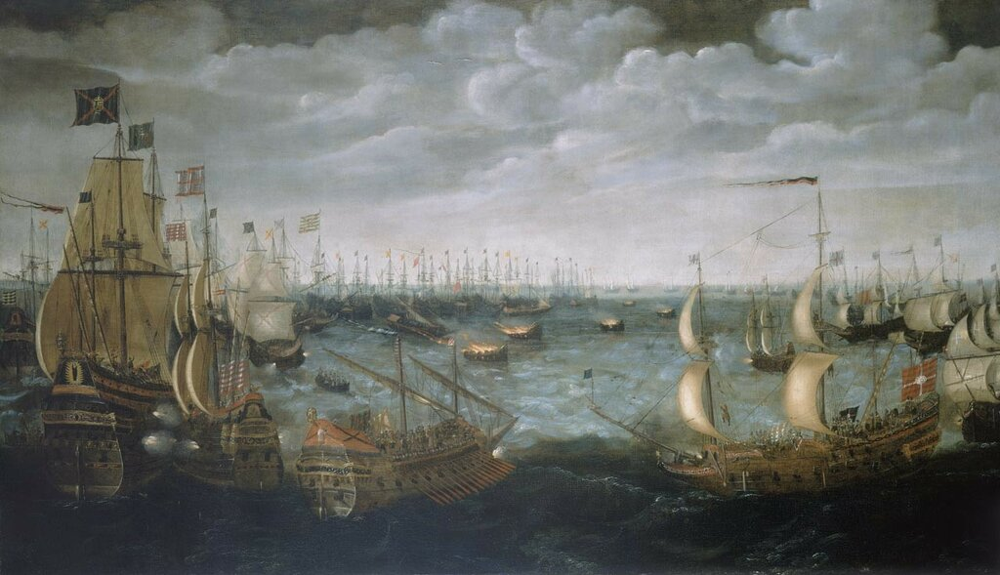
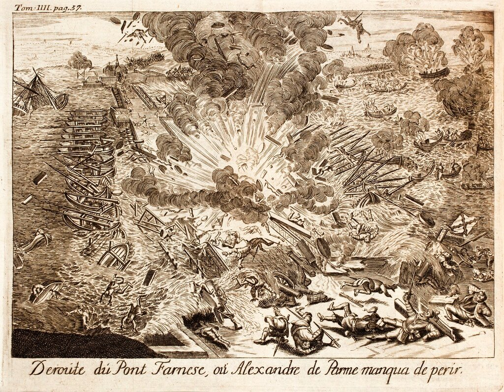

Продолжаем читать Дневник солдата, сегодня – раздел об атаке брандеров.

Атака брандеров против кораблей Непобедимой армады в Кале. 7 августа 1588 года. Нидерландская школа. 1590, National Maritime Museum, Greenwich, Лондон
Воскресным утром 7 августа несколько французских дворян прибыли из Кале с визитом к Его Превосходительству. Одновременно прибыл фрегат (fragata) от принца Пармы, который, как говорят, принес новость, что принц не загрузил еще на корабли ни единого бочонка пива (un barril de cerbeça), и еще меньше солдат; и может не хватить пятнадцати дней для погрузки. Днем более тридцати новых кораблей присоединилось к флоту противника, хотя они и были небольшими по размерам.
Около полуночи враг запустил семь кораблей, наполненных взрывчатыми веществами (siete baje¬les de artificios de fuego), которые приливным течением принесло к нашей Армаде. Мы вынуждены были рубить якорные канаты и покинуть место стоянки в большом замешательстве и страхе. В это время, когда мы уже почти поставили паруса, к нашему кораблю причалила фелука с принцем Асколи (Antonio Luis de Leyva, 4-й принц д’Асколи, побочный сын короля Филиппа II -g._g.) на борту, который сообщил адмиралу, что его ждут на флагманском корабле. Адмирал ответил, что сейчас у него нет времени совершать такие поездки и оставлять свой корабль и что его мнение ничего не значит. Принц ответил, что поскольку его мнение тоже не принимается в расчет, и поскольку на борту флагманского корабля Сан Мартин царит смятение, он не вернется на него. Соответственно, утром следующего дня принц отправился в Кале с капитаном Marolín и другими лицами.
Примечание 18. Здесь еще одна неточность в Дневнике Рекальде. Сведения о пятнадцати днях, необходимым для погрузки армии во Фландрии, поступили не от герцога Пармского, а от секретаря герцога Медина-Сидония. Поэтому, возможно, автор употребляет выражение dicen dijo – «говорят, что он сказал». На самом деле, как мы увидим дальше, потребовалось всего трое суток, чтобы армия Пармы была погружена на суда.
Примечание 19. Уместно будет разъяснить, почему такое «замешательство и страх» у испанцев вызвало применение англичанами зажигательных судов. Рассмотрим все по порядку.
Ранним утром 7 августа лорд-адмирал Говард созвал военный совет на борту Арк Ройял. Один из видных флотоводцев елизаветинской Англии адмирал Уильям Уинтер (Sir William Wynter, 1521 – 1589), который только что присоединился к флоту лорда-адмирала в составе эскадры Сеймура, предложил ближайшей ночью провести против Армады атаку зажигательных судов – брандеров. Условия для такой атаки сложились весьма благоприятные. Корабли Армады находились на якорной стоянке, их командование пока не приняло решения относительно последующих шагов. Быстро уйти от возможной атаки зажигательных судов мешали находящиеся под ветром у Армады Фламандские отмели. Сложилось благоприятное для англичан сочетание свежего ветра с западных направлений и соответствующие ему приливные течения, которые могли быстро доставить брандеры в центр строя Непобедимой армады. Лорд-адмирал принял предложение Уинтера и направил сэра Генри Палмера на Антилопе в Дувр для найма соответствующих судов и погрузки на них необходимых зажигательных средств. Эти средства были предусмотрительно запасены лордом Сеймуром и складированы заранее. Однако свежий ветер не позволял доставить арендованные суда к полуночи, поэтому было принято решение взять брандеры из состава вооруженных купеческих судов английского флота, находящихся у побережья Кале (для осуществления плана было подготовлено восемь брандеров, а не семь, как пишет Рекальде). Решено было пожертвовать 200-тонными Bark Talbot и Thomas Drake, а также Hope of Plymouth (180 тонн) Back Bond и Cure’s Ship (оба по 150 тонн), Bear Yonge (140 тонн), небольшой Elizabeth of Lowestoft (90 тонн) и еще одним небольшим судном, название которого не сохранилось. В течение всего дня корабельные плотники работали над изменением конструкции выбранных судов, заделывая ненужные отверстия и прорубая новые порты в корме для незаметной эвакуации экипажей брандеров при подходе к противнику. На брандеры доставили все горючие материалы, которые можно было достать на кораблях флота (старый такелаж, паруса, паклю, смолу и т.д.) и пропитали их нефтью и нефтепродуктами, которые удалось собрать. Все пушки брандеров были заряжены двойным количеством пороха и ядер, они должны были выстрелить при повышении температуры и увеличить панику среди экипажей флота противника. Для направления брандеров в сторону Армады были отобраны добровольцы, которые в нужный момент должны были перейти на буксируемые брандерами баркасы.
Приведенное описание показывает, что наспех подготовленные брандеры были не такой уж серьезной угрозой для испанского флота и при умелых действиях их атака легко могла быть отражена. К тому же командованием Армады были приняты необходимые превентивные меры. Медина-Сидония распорядился о создании заслона из легких судов (каравелл, паташей, фелук и забр) между стоящими на якоре испанскими кораблями и английским флотом. Подобный же заслон был выставлен и на восточном направлении, чтобы исключить неожиданное нападение со стороны голландских кораблей. Почему же такая паника охватила моряков Армады? Испанцы посчитали, что на них надвигаются не простые брандеры, а корабли-бомбы, несколько лет назад успешно примененные англичанами против испанцев, осаждающих Антверпен. Приведем описание этого события из известной книги Джека Келли.
Через год после того, как Мориц стал главой Голландии, порох продемонстрировал новую роль, которую он сможет играть в грядущих катаклизмах. Войска испанских Габсбургов под командованием герцога Пармы осадили Антверпен. Странствующий итальянский военный инженер по имени Федериго Джамбелли предложил испанцам свои услуги и получил резкий отказ. Подобно предприимчивому инженеру Урбану под Константинополем, Джамбелли взял реванш, продав свое мастерство голландцам.
Инженер превратил парусное судно, по иронии судьбы носившее имя «Надежда», в новое оружие — первую плавучую бомбу с часовым механизмом. Он загрузил в трюм почти четыре тонны пороха и обложил взрывчатку со всех сторон кирпичом, кусками металла и даже надгробными плитами. Все это должно было после взрыва превратиться в смертоносные снаряды. Часовой механизм был присоединен к запалу. Корабль назвали «адской машиной» — в этом термине отразились сразу два взгляда на мир: уходящий средневековый, исполненный веры во всесилие демонов, и современный, для которого вселенная была механизмом, подобным часовому.
Отлив понес «Надежду» к забитому людьми понтонному мосту, при помощи которого испанцы блокировали подходы к городу. Бомба взорвалась в нужную минуту, проделав в мосту огромную брешь и разбросав обломки в радиусе мили. На тот момент это была самая мощная бомба в истории. Сотни людей погибли на месте. «Антверпенский адский брандер» стал ужасным доказательством того, что разрушительная мощь пороха все возрастает.
Келли, Джек (Kelly, Jack) Порох. От алхимии до артиллерии: история вещества, которое изменило мир, пер. с англ. Александра Турова. — М.: КоЛибри, 2005. с. 182

Подрыв понтонного моста, который использовался герцогом Пармским при осаде Антверпена в 1585 году. (Гравюра из книги Histoire de la guerre des Païs-Bas, du R.P. Famien Strada ... traduite par P. Du Ryrer, 1727. Tom. IIII p. 57)
На кораблях Непобедимой армады было много ветеранов той осады Антверпена, именно они и стали зачинщиками паники на испанских кораблях. Поэтому, когда сразу после полуночи наблюдатели на кораблях завесы увидели пылающие корабли, надвигающиеся из темноты, была поднята тревога. Видимо, горючее на брандерах было подожжено раньше времени, поэтому даже при скорости приливного течения в 3 узла им потребовалось 15-20 минут, чтобы достичь первых кораблей Армады. Кораблям завесы удалось завести буксиры на два брандера и оттащить их на мель. Однако остальные шесть зажигательных судов продолжали угрожать главным силам Армады. Медина-Сидония принял решение рубить якорные канаты, ставить паруса и срочно покинуть якорную стоянку. С Сан Мартина был произведен пушечный выстрел («Делай как я!»), на отдаленные от флагмана корабли посланы пинасы с соответствующим распоряжением. И несмотря на панические настроения, маневры испанских моряков были выполнены четко и грамотно. Лишь одно столкновение произошло в темноте, галеас Сан Лоренсо повредил руль и на веслах пошел к берегу для ремонта. Все остальные корабли Армады благополучно избежали столкновения с английскими брандерами.
Однако вернуться на прежнюю якорную стоянку на рейде Кале испанцам не удалось. Сильное приливное течение увлекало корабли Армады на северо-восток, характер грунтов не позволял удержаться на якоре до начала отлива. Армада неуклонно смещалась в сторону Гравелина. Чем это закончилось – посмотрим в следующий раз.